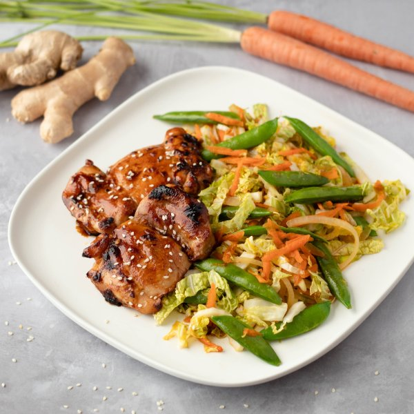

Spiced Honey Chicken with Sauteed Snap Peas, Carrots, & Cabbage

Prep Time
40 min
Nutrition (per serving)
563.7 kcalCalories
45.3 gProtein
37.1 gCarbs
27.7 gFat
Full nutrition table
| Calories | 563.7 kcal |
| Total fat | 27.7 g |
| Saturated fat | 9.9 g |
| Trans fat | 0 g |
| Cholesterol | 159.9 mg |
| Sodium | 215.6 mg |
| Carbohydrates | 37.1 g |
| Fiber | 9 g |
| Sugars | 20.8 g |
| Protein | 45.3 g |
| Potassium | 1545.6 mg |
| Calcium | 269.9 mg |
| Iron | 5.9 mg |
| Vitamin A | 754.7 IU |
| Vitamin C | 132.4 mg |
| Vitamin D | 1.7 IU |
Cookware
Ingredients
- 2 mediumcarrots
- 1 ½ lbchicken thighs, boneless skinless
- 4 clovesgarlic
- 1 medium headnapa cabbage
- 2 (8 oz) pkgsugar snap peas
- 2 mediumyellow onions
- chili-garlic sauce
- honey
- sesame seeds
- soy sauce
- toasted sesame oil
- virgin coconut oil
Steps
- Preheat the oven to 400°F.
- Peel and mince garlic; combine with chili garlic sauce, soy sauce, honey, and sesame oil in a small bowl; whisk to combine.4 cloves garlic
4 tsp chili-garlic sauce
½ cup soy sauce
2 tbsp honey
2 tbsp toasted sesame oil - Place chicken in a baking dish, making sure to unroll the thigh pieces and lay them flat. Drizzle with half the marinade and place in the oven. Reserve the remaining, untouched marinade for later. Bake chicken until cooked through and golden, 20 minutes, flipping once halfway through.1 ½ lb chicken thighs, boneless skinless
- While chicken is cooking, wash and dry the fresh produce.2 medium carrots
1 medium head napa cabbage
2 (8 oz) pkg sugar snap peas - Preheat a large skillet over medium-high heat.
- Peel and thinly slice onions into half rings.2 medium yellow onions
- Once the skillet is hot, add coconut oil and swirl to coat the bottom.2 tbsp virgin coconut oil
- Add onions to the skillet and stir-fry until tender, 2-3 minutes.
- Peel and grate or julienne the carrots.
- Add peas and carrots to the skillet with the onions and stir-fry, 2-3 minutes more.
- Trim off and discard the root end of the cabbage; halve the cabbage lengthwise, then thinly slice crosswise.
- Add cabbage and remaining marinade to skillet and stir-fry until cabbage is just wilted, 1-2 minutes.
- To serve, divide stir-fried vegetables between plates; top with chicken and sesame seeds. Enjoy!¼ cup sesame seeds